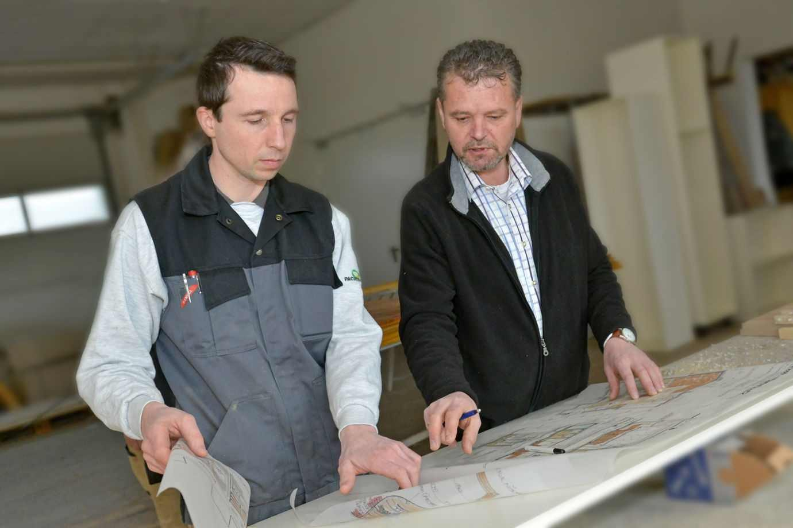

Geißfußfenster aus Kieferholz
Lackiert mit weißer Pullex-Ölfarbe. Die innere Ausführung besteht aus einer Dichtungsebene und Isolierglas – historische Ansicht außen, heutiger Standard innen.
Kastenfenster · Neubau und Althaussanierung
Kastenfenster sind seit der Firmengründung unsere Spezialität. Wir fertigen sie für Neubauten und ersetzen oder restaurieren sie in alten Häusern – inklusive der Details, an denen man erkennt, ob ein Fenster zum Haus gehört oder nur hineingestellt wurde.

Zwei Wege
Beide Wege führen zu einem dichten, funktionierenden Fenster. Welcher der richtige ist, zeigt sich beim Aufmaß vor Ort.
Der Bestand bleibt erhalten: Flügel und Stock werden ausgebaut, in der Werkstatt überarbeitet und wieder eingesetzt. Bei einem Schloss in Oberösterreich haben wir auf diese Weise sämtliche Fenster restauriert und die Innentüren abgebaut, restauriert und neu aufgebaut.
Ist die Substanz nicht mehr zu retten, bauen wir das Fenster nach altem Vorbild neu – bis hin zum Wiedereinsetzen des alten, selbstgeblasenen Außenglases in die neuen Flügel. Im Schloss Riedegg wurden die Türen nach Bestand nachgebaut und der Fußboden aus Altholz angefertigt.
Ausführungen
Diese Varianten haben wir in der Innenstadt von Freistadt und bei weiteren Objekten ausgeführt.
Lackiert mit weißer Pullex-Ölfarbe. Die innere Ausführung besteht aus einer Dichtungsebene und Isolierglas – historische Ansicht außen, heutiger Standard innen.
Ausführung mit innerem Isolierglas und Dichtung, die Oberfläche aus geölter Lärche. Eine Variante für Häuser, bei denen das Holz sichtbar bleiben soll.
Das selbstgeblasene Außenglas der alten Fenster wird ausgebaut und in die neuen Flügel eingekittet. So bleibt das typische, leicht bewegte Spiegelbild in der Fassade erhalten.
Die Haustür wurde neu aufgebaut, mit Motorschloss und neuem Rahmen versehen – die Außenansicht blieb dabei erhalten.
Gefräste Schalung, Motorschloss und Fingerprint. Das Garagentor wurde passend zur Haustür gefertigt.
Innentüren werden nach vorhandenem Vorbild nachgebaut, damit Profil, Proportion und Beschläge im ganzen Haus zusammenpassen.
Ablauf einer Fenstersanierung
Anfrage mit Fotos und ungefährer Anzahl der Fenster – per Formular, E-Mail oder Telefon.
Aufmaß und Begutachtung vor Ort: Wir prüfen Substanz, Glas, Beschläge und Anschlüsse.
Zeichnung und Angebot mit Entscheidung zwischen Restaurierung und Nachbau, inklusive Holzart, Oberfläche und Verglasung.
Fertigung in der eigenen Werkstatt, bei Bedarf Bemusterung von Oberfläche und Profil.
Montage durch unser Team, Einpassen in den Bestand und Übergabe.
Häufig ja. Ob restauriert oder nachgebaut wird, entscheidet sich erst beim Aufmaß vor Ort, wenn wir die Substanz von Flügel, Stock und Beschlägen beurteilen können.
Wenn es die Substanz zulässt: Wir bauen das selbstgeblasene Außenglas aus und kitten es in die neuen Flügel ein. Innen kommt Isolierglas mit Dichtungsebene zum Einsatz.
Ja. Kastenfenster im Neubau sind seit der Firmengründung Teil unseres Programms – ebenso wie Bautischlerarbeiten und Möbelbau im Massivholzbereich.
Ja. Haustüren bauen wir neu auf oder fertigen sie nach Bestand, auf Wunsch mit Motorschloss und Fingerprint. Garagentore fertigen wir passend zur Haustür.
Schwerpunkt sind das Mühlviertel und der Bezirk Freistadt. Umgesetzte Projekte gibt es unter anderem in Freistadt, Summerau, Grünbach, Rainbach, St. Florian, Enns und in der Stiftung.